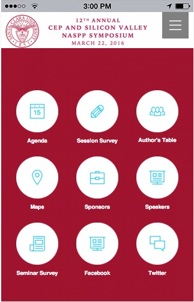

Front End Developer Intern
Certified Equity Planning Institute
- Modeled and implemented solutions to cater to the attendees of National Anuual Symposium.
- Crafted a beautiful event app that makes it stunningly simple to find event information in a heartbeat, even offline
- Designed the app for both Android and iOS which had more than 500 downloads on the day of publish

Software Engineer
Orion India Pvt Ltd (Oct 2013 - Dec 2014)
Yumvino
- My major project at Orion was to design UI for Yumvino - an American Wine searching website
- Designed the UI using HTML5, CSS3, Bootstrap and Mobile first approach making it a very interactive app
- Used Modal and Carousel from Bootstrap and integrated it with HTML to give the website a fresh look and feel.
- Used Google Map's API to integrate maps in the website
- Created Dashboards to summarize the website traffic using Tableau
- Collaborate with cross functional teams interacting with the system to gather requirements. Further translate these requirements in to technical specifications
- Created Web application for CISCE, which manages the admission and test process of all schools and colleges under CISCE board which operates in 4 countries.
- Created responsive website by writing media query code so that the website can be properly viewed across all devices
- We got this project CISCE which has schools in 4 countries
- The project was about developing their website and building a system through which paper correction of students would become fast and it would be available for everyone to view on cloud
- I was involved in the analysis and design of the system
- I also designed the UI of the website
Founder
NewNoveltyGifts.com (May 2013 - Dec 2014)
Founded start-up in toy industry and made an web application using JavaScript, HTML5, CSS3 and PHPThe application would allow customers to purchase products and admin to upload themI successfully managed a group of 6-7 people and 700-800 products thus generating sales of approximately INR 300K/monthAlso managed all operations including uploading products, placing seasonal discounts, checking for orders and ensuring timely deliveryShouldered responsibility of technical and financial analysis
Testing Engineer
T-Star Instrumentation (June 2012 - Sep 2013)
- Gathered requirements by interviewing business stake holders and further converted requirements in to technical specifications
- Developed interactive dashboards on Tableau to help management make better decisions
- Automated the monthly management reports creating task using Qlikview
- Created stored procedures to generate invoices and reports for analysis to customers
- Developed data marts by integrating data from multiple excel files and SQL Server using ETL tool.
- Wrote complex SQL queries for sales operation reports to drive business decisions
- Tested circuits like Digital Temperature Indicator, Data Logger, Digital RPM Indicator, etc., which accounted for 75% of the products in the company, delivering solutions that guaranteed performance.
- Shouldered responsibility of testing around 50 circuits per day with an addition of talking to customers, knowing their requirements, repairing circuits and maintaining accounts for finished products
- Was also responsible for hardware and software testing of the circuits
- Did soldering and mounting of most of the electronic instruments on PCB
Hardware and Networking Trainee
Network Techlab
My job was to assemble desktop computers, install the necessary softwares and drivers and repair computers. I also learned how to use LANs, Routers, Switches, Modems, etc